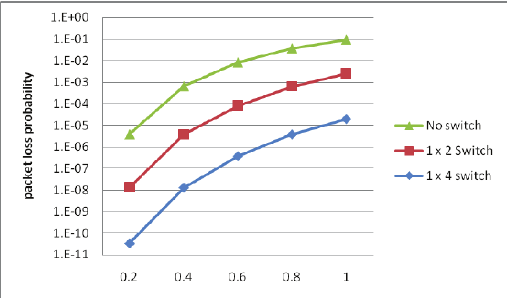
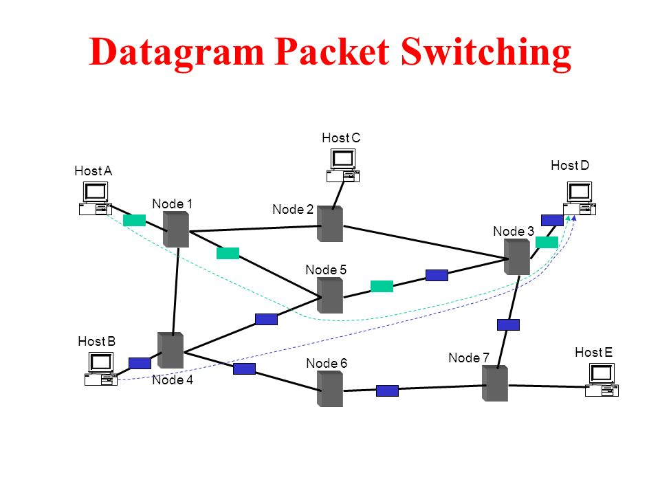
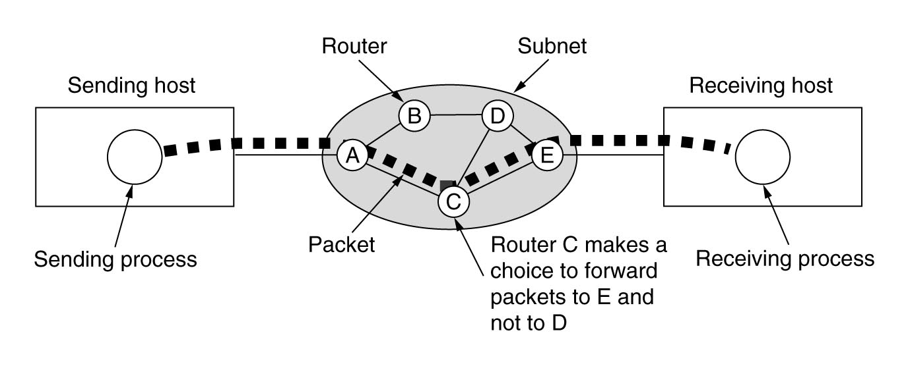

What is packet switching?
Packet-switching is when small packets of data are broken up from the original source of data and are sent through a network protocol such as frame relay, IP, and X.25 to reach its destination. The data is travelled through network switches and routers and then reassembled at the end of its destination. How the data recognises from other packets is through an address that each packet tagged with. Using these address, network switches and routers determine the best route for the packet to be transferred. It identifies where it is sent from as well as the recipient. When data is broken into packets, it allows for the same data path to be shared amongst many users making receiving and sending data efficient.

Importance of packet switching
This method of sending data over the internet has been developed to overcome the weaknesses of circuit switching. These weaknesses include the inefficiency to send small messages, lost data and data being more prone to noise and errors. If data is lost on a circuit switching network, it is gone for good while on the other hand, packet switching networks are able to resend data.
Types of packet switching

Vertical Circuit packet switching:A single route sends packets between the sender and receiver. There is a setup, data transfer and tear down phase just like circuit switching networks. This type of network is typically implemented in the data link layer.

Datagram Packet-Switching: Packets in these types of networks are transmitted without regards to other packets. Each packet is treated as an individual and independent transmission and has a source and destination. For example, if four packets belong to the same source, they may travel via different paths to reach its destination. This can mean that packets can arrive in a different order from the initial order that it was sent.
Advantages of packet switching
The use of network bandwidth is used more efficiently due to the flexibility in sending packets of shared links. Packet switching networks are cheap to build since less equipment is needed. It is also reliable since the receiving computer can automatically request for a packet to be resent if a packet is missing as well as to reroute the packet if any node is to fail.

Conclusion
The divide of data into packets has enabled data transportation to utilise the network channel efficiently. Multiple users are able to send/receive data without one’s packet affecting another.